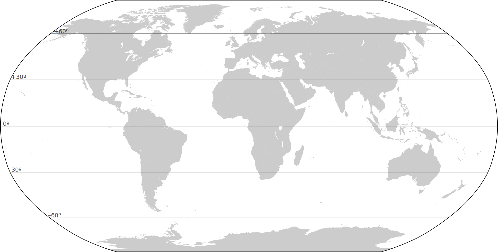
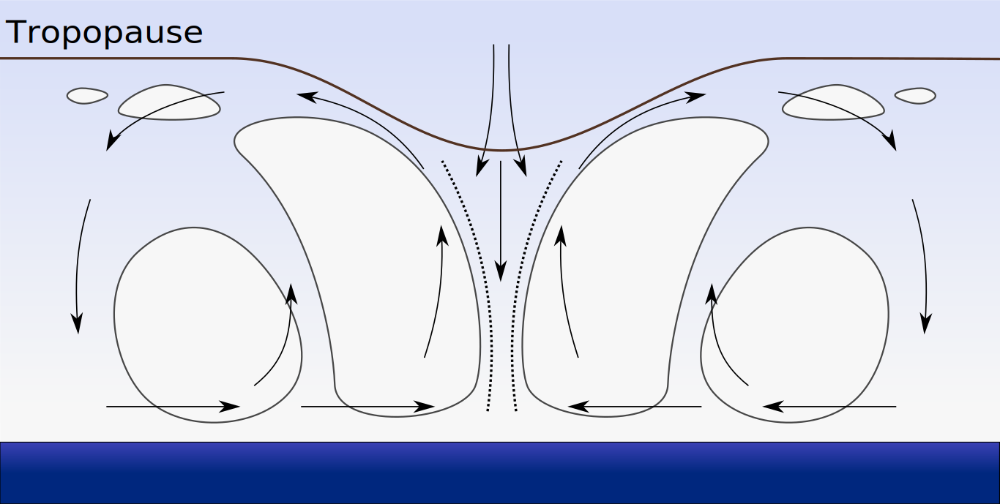
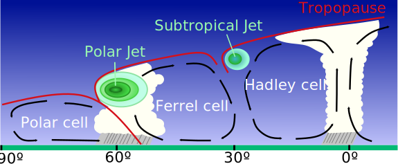
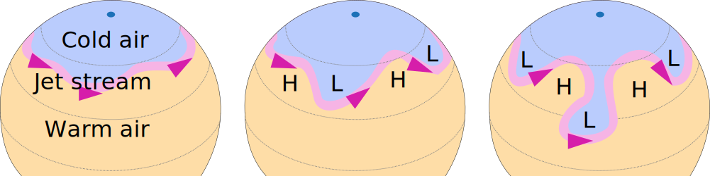
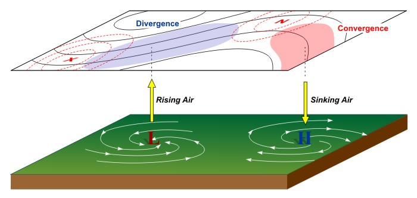
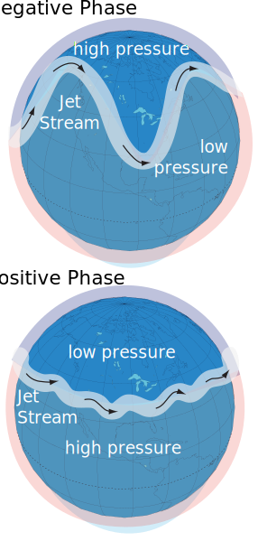
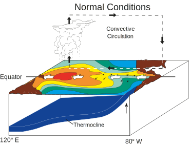
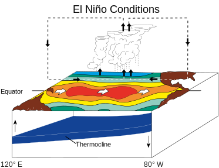
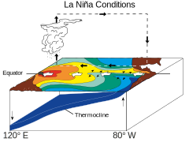

Climate & Weather
Week
GEOS 3410
Week Schedule
Tuesday
- Up/downwelling
- Storms
- Polar fronts
- Clouds
Thursday
- Climate-weather oscillations
- Teleconnections
- Practice …
Outside of class
- Week reading
- Study & review for exam next week
- Term paper proposal due on Friday
Subpolar surface circulation
1 Antarctic circumpolar current , 2 sub-Arctic gyres
Subpolar surface circulation

Vertical motion in gyres
| Region | Water flow | Vertical motion |
|---|---|---|
| Subtropics | Convergence | ↓ Downwelling ↓ |
| Subpolar | Divergence | ↑ Upwelling ↑ |
Primary production — a reprise

- Abundant nutrients ↑ productivity
- Nutrients accumulate in subsurface (biologic pump)
- Upwelling (shallow thermocline) → abundant nutrients
Walker Circulation

Weather
Atmospheric pressure
What looks familiar? What looks surprising?

Low Pressure (T)
High pressure (H)
Local H/L Pressure zones shift with seasons
What role do continents play?
Low Pressure (T)
January
High pressure (H)
Local H/L Pressure zones shift with seasons
What role do continents play?

Low Pressure (T)
July
High pressure (H)
Climate
An atmospheric circulation model + continents and ocean circulation(add large-scale complexity in a predictable way)
Weather is the small-scale unpredictability.
Tropical cyclones
Cross-section of a mature tropical cyclone
Adapated from Wikimedia image
(hurricane, typhoon are regional names for a tropical cyclone)
Tropical cyclone tracks

Where are these going? Why? Where do they stop? Why?
Anticyclonic systems (rarer)
Austrlaian High

Rare anticyclonic storm/cloud system


Climate & weather in the Mid-latitudes
Jet streams: high-altitude winds
The polar front: Rossby waves in the polar jet streams

Why are the lobes of cold air Low pressure and warm air High pressure?
(hint: think about the directions of airflow in the jet stream)
(hint: think about the directions of airflow in the jet stream)
Rotating systems
| Pressure | Motion | NH rot. | SH rot. | |
|---|---|---|---|---|
| Cyclone | Low | Inward | ccw ↺ | cw ↻ |
| Anticyclone | High | Outward | cw ↻ | ccw ↺ |

Low-pressure frontal systems


⛈️ Weather!! ⛈️
Cold front advancing from West 
Warm front advancing from West 

Monsoon climates
Monsoon climates
Dramatic seasonal changes in prevailing wind direction and precipitation
Monsoon climates

Monsoon climates
☁️ Clouds ☁️
Cloud types

Cloud types
| Cirrus | wispy, icy | ascent of warm, dry air |
|---|---|---|
| Cumulus | tall columns | focused upward convection |
| Stratus | layered sheets | diffuse upward convection |
Subtypes are not important (to us)
Complex role of clouds in climate
| Elevation | Cloud types | Visible/UV | Infrared |
|---|---|---|---|
| High | cirrus | weak reflection | strong absorption |
| Low | cumulus, stratus | strong reflection | absorption & emission! |
Complex role of clouds in climate change: net warming

〰️ Oscillation Station 〰️
Climate oscillations & teleconnections
| Oscillation | Variations between two (climate) extremes. May or may not be periodic |
|---|---|
| Teleconnection |
Links between widely separated weather phenomena. Establish climate patterns spanning 1000s of km. |
North Atlantic Oscillation (NAO)
North Atlantic Oscillation (NAO)
Changes in NH winter storm track and trade wind strength on timescales just longer than weather (few weeks).
Seasonal-scale variability with weak longer term patterns

Teleconnection Alert!
NAO is (probably?) the Atlantic portion of the Arctic Oscillation
AO Index Timeseries (1950–2016)

∼60 day period with longer wavelength variability

Atlantic Multidecadal Oscillation (AMO)
Index from detrended North Atlantic sea surface temperature
Period of 60 to 90 years.
Atlantic Multidecadal Oscillation (AMO)
- Associated with hurricane frequency
- Perhaps driven by small variability in thermohaline circulation
- Perhaps not an oscillation at all, but driven by volcanism (Mann+ 2021)
El Niño — Southern Oscillation (ENSO)
El Niño — Southern Oscillation (ENSO)
"Walker Circulation"
El Niño — Southern Oscillation (ENSO)
Weaker trade winds
El Niño — Southern Oscillation (ENSO)
Especially strong trade winds
Measuring ENSO
Southern Oscillation Index (SOI)
Difference in sea level pressure between Tahiti and Darwin (Tahiti – Darwin)

Measuring ENSO
Southern Oscillation Index (SOI)
- Events occur every ∼2–7 years.
- EN lasts 9–12 months, more common
- LN lasts 1–3 years
Adapted from Wikimedia. El Niño / La Niña event when 7 ≤ | SOI |
ENSO beyond the equatorial Pacific


Global impacts


ENSO in a changing climate
Stronger than historic changes → ≥1
ENSO in a changing climate
Stronger than historic changes → ≥1Pacific Decadal Oscillation (PDO)
PDO Index: N. Pacific SST

Period ≈ 50–70 years
Warm (+) Phase
Warm central, cooler in N & S.
Cold (–) Phase
Cool central, warmer in N & S.
Combination of multiple processes spanning tropical to polar latitudes.

{kind=link}
{kind=link}
{kind=link}
{kind=link}
{kind=link}
{kind=link}
ENSO – PDO Connections through the atmosphere

{kind=link}
Persistent PDO phases
Centennial timescales: 1000 CE – present

{kind=link}
Term paper proposal due 5pm tomorrow (Oct. 4)
Next Week ()
- Study for Midterm I — study guide on Canvas
- Tuesday: review
- Thursday: exam